Laravel Relationship: Student, Major, dan Subject
Published on: 3 June 2026
Pendahuluan
Latar Belakang
Dalam pengembangan aplikasi web modern berbasis bahasa pemrograman PHP, pemanfaatan kerangka kerja (framework) menjadi suatu kebutuhan mendesak untuk meningkatkan efisiensi waktu dan menjaga keteraturan struktur kode program. Laravel merupakan salah satu framework PHP yang banyak digunakan karena mengusung pola arsitektur Model-View-Controller (MVC), yang berfungsi secara sistematis memisahkan antara logika bisnis, pengelolaan basis data, dan antarmuka pengguna. Lebih jauh lagi, dalam pengelolaan basis data relasional, pengaturan hubungan antar entitas (relationship) memegang peranan esensial untuk menjaga integritas dan keterhubungan data. Kerangka kerja Laravel, melalui fitur Eloquent ORM (Object-Relational Mapping), memberikan pendekatan yang sangat komprehensif dalam memetakan relasi tabel secara langsung (object-oriented) tanpa mengharuskan penulisan kueri SQL yang rumit secara manual. Dengan pemanfaatan fitur ini, operasi pengelolaan data kompleks yang melibatkan beberapa tabel dapat dilakukan secara efisien, modular, dan terstruktur.
Praktikum ini dilaksanakan sebagai bagian dari pemenuhan tugas pada mata kuliah Praktikum Pemrograman Web di Departemen Informatika, Fakultas Teknologi Informasi, Universitas Andalas. Pelaksanaan praktikum ini ditujukan untuk memfasilitasi pemahaman mendalam terkait implementasi dua bentuk relasi fundamental, yaitu One-to-Many dan Many-to-Many. Objek pengamatan difokuskan pada perancangan sistem akademik berskala kecil yang menghubungkan entitas mahasiswa (Student), program studi (Major), serta mata kuliah (Subject). Melalui pengimplementasian relasi ini, diharapkan tercipta struktur perangkat lunak yang memenuhi standar skalabilitas yang baik dan mampu mengelola relasi data secara optimal di tingkat basis data maupun pada tingkat presentasi (View).
Rumusan Masalah
Berdasarkan modul praktikum yang menjadi acuan, rumusan masalah dalam praktikum ini dapat dirumuskan sebagai berikut:
- Bagaimana prosedur yang tepat dalam pembuatan file migrasi (migration) yang melibatkan pendefinisian kunci tamu (foreign key) untuk membentuk relasi antar tabel.
- Bagaimana langkah-langkah dalam membangun relasi model One-to-Many dan Many-to-Many dengan menggunakan Eloquent ORM.
- Bagaimana cara memanfaatkan relasi Eloquent dalam proses pengambilan data (query) untuk meminimalkan beban basis data, termasuk teknik pemuatan data awal (eager loading).
- Bagaimana cara menyajikan data yang memiliki keterhubungan kompleks pada lapisan antarmuka atau tampilan (View).
Tujuan
Berdasarkan rumusan masalah yang telah dijabarkan, maka tujuan dari pelaksanaan praktikum ini adalah sebagai berikut:
- Mahasiswa mampu memahami secara komprehensif konsep relationship yang disediakan oleh kerangka kerja Laravel.
- Mahasiswa mampu mengimplementasikan pembuatan file migrasi berserta aturan foreign key yang sesuai.
- Mahasiswa mampu menerapkan hubungan One-to-Many antara entitas Major dan Student, serta hubungan Many-to-Many antara entitas Student dan Subject.
- Mahasiswa mampu menyusun controller yang mengelola data berelasi dan menampilkannya secara efisien di dalam file Blade Template.
Langkah-Langkah Pengerjaan
1. Persiapan Struktur Database dan Pembuatan Migration
Tahap awal difokuskan pada perancangan struktur basis data. Dilakukan pembentukan empat file migrasi utama, yaitu untuk entitas majors, students, subjects, serta satu tabel perantara (pivot table) student_subject yang difungsikan untuk menjembatani relasi Many-to-Many.
A. Tabel Majors
Pembuatan tabel majors diinisialisasi dengan mengeksekusi perintah php artisan make:migration create_majors_table pada antarmuka baris perintah (Command Line Interface). Struktur tabel ini dirancang sangat fundamental, hanya menyimpan data identitas program studi pada atribut bertipe string, yaitu name. Fungsi $table->id() disertakan secara implisit untuk membentuk kolom , sedangkan $table->timestamps() bertugas memonitor waktu pembuatan (created_at) dan pembaharuan data (updated_at).
Schema::create('majors', function (Blueprint $table) {
$table->id();
$table->string('name');
$table->timestamps();
});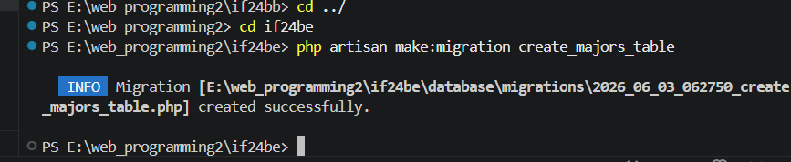
B. Tabel Students
Untuk mengakomodasi penyimpanan data mahasiswa, dibentuk tabel students melalui perintah php artisan make:migration create_students_table. Pada tabel ini, selain kolom , atribut dasar seperti Nomor Induk Mahasiswa (nim), nama lengkap (name), dan alamat (address) ditambahkan ke dalam skema. Guna menjaga keutuhan relasi dengan tabel majors, disertakan kolom major_id yang difungsikan sebagai kunci tamu (foreign key). Konfigurasi foreignId('major_id')->constrained('majors')->onDelete('cascade') memastikan bahwa penghapusan suatu program studi akan secara otomatis menghapus seluruh data mahasiswa yang tertaut padanya, sehingga tidak menyisakan pada sistem basis data.
Schema::create('students', function (Blueprint $table) {
$table->id();
$table->string('nim')->unique();
$table->string('name');
$table->text('address');
$table->foreignId('major_id')->constrained('majors')->onDelete('cascade');
$table->timestamps();
});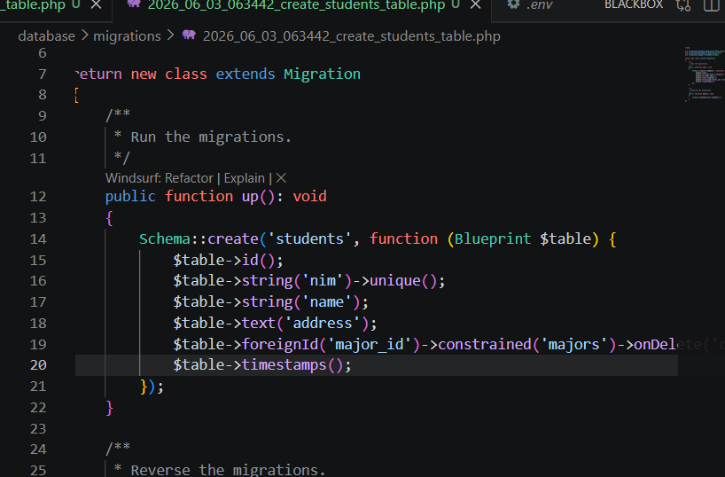
C. Tabel Subjects
Pembuatan tabel subjects dilakukan dengan memanggil instruksi php artisan make:migration create_subjects_table. Tabel ini disusun untuk menampung entitas mata kuliah, meliputi nama dari mata kuliah itu sendiri pada kolom name berserta beban Satuan Kredit Semester yang ditampung dalam kolom bertipe bilangan bulat sks.
Schema::create('subjects', function (Blueprint $table) {
$table->id();
$table->string('name');
$table->integer('sks');
$table->timestamps();
});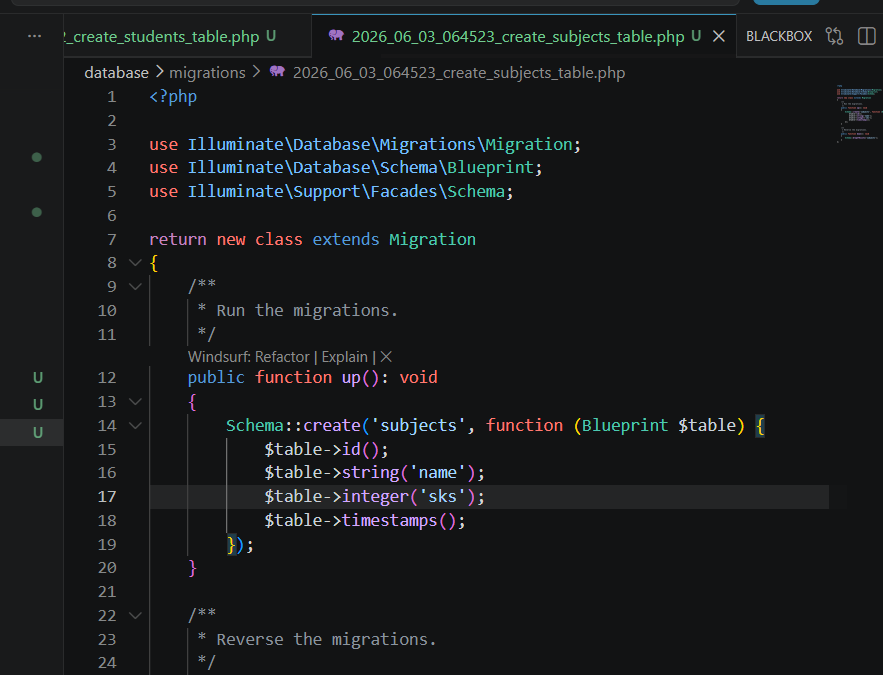
D. Tabel Pivot Student_Subject
Dalam arsitektur basis data relasional, hubungan antar entitas dengan pola Many-to-Many memerlukan perantara berupa . Untuk merealisasikan relasi antara mahasiswa dan mata kuliah, dibentuklah tabel student_subject menggunakan instruksi php artisan make:migration create_student_subject_table. Pada tabel perantara ini, kolom student_id dan subject_id dikonfigurasi sebagai kunci tamu. Guna menanggulangi anomali duplikasi entri (seperti seorang mahasiswa didaftarkan pada mata kuliah yang sama lebih dari satu kali), ditambahkan pengaturan $table->unique(['student_id', 'subject_id']).
Schema::create('student_subject', function (Blueprint $table) {
$table->id();
$table->foreignId('student_id')->constrained('students')->onDelete('cascade');
$table->foreignId('subject_id')->constrained('subjects')->onDelete('cascade');
$table->timestamps();
// Mencegah duplikasi kombinasi student_id dan subject_id
$table->unique(['student_id', 'subject_id']);
});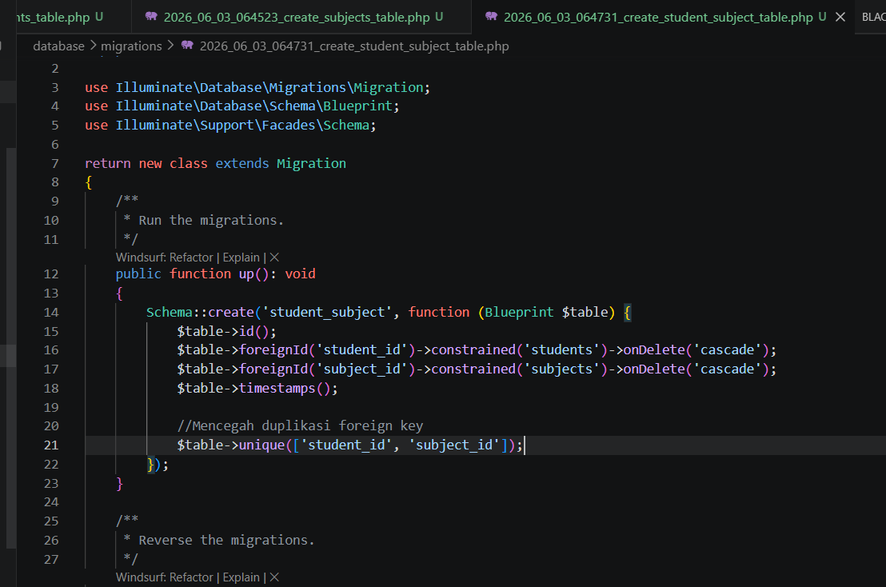
Setelah seluruh susunan migrasi dirancang dengan matang, tahapan fisikasi skema pada basis data dieksekusi dengan memanggil utilitas baris perintah php artisan migrate.
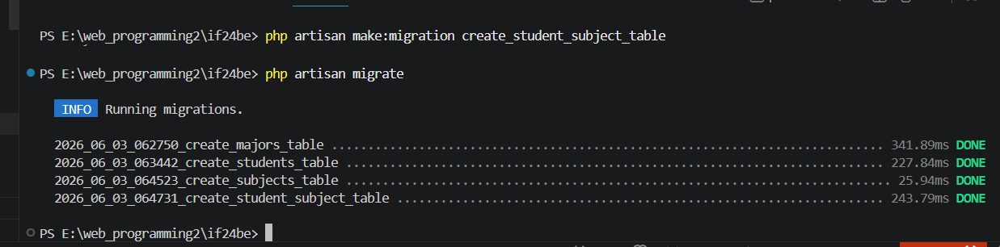
2. Pembentukan Model dengan Definisi Relationship
Selanjutnya, representasi entitas pada aras aplikasi direalisasikan lewat penciptaan file Model. Agar fungsionalitas ORM berjalan optimal, definisi relasi antar tabel tidak ditulis menggunakan kueri SQL mentah, melainkan dengan memetakan keterhubungan tersebut ke dalam fungsi-fungsi internal pada kelas Model.
A. Model Major
Model pertama dibuat dengan perintah php artisan make:model Major. Agar interaksi masukan secara masal dari formulir daring tidak menimbulkan celah keamanan, variabel properti terlindungi $fillable disisipkan. Selanjutnya, relasi One-to-Many direpresentasikan lewat fungsi students() yang mengembalikan nilai dari metode hasMany(Student::class). Instruksi ini memberi sinyal kepada sistem bahwa satu rekaman entitas program studi berpotensi menaungi banyak rekaman mahasiswa.
protected $fillable = ['name'];
public function students()
{
return $this->hasMany(Student::class);
}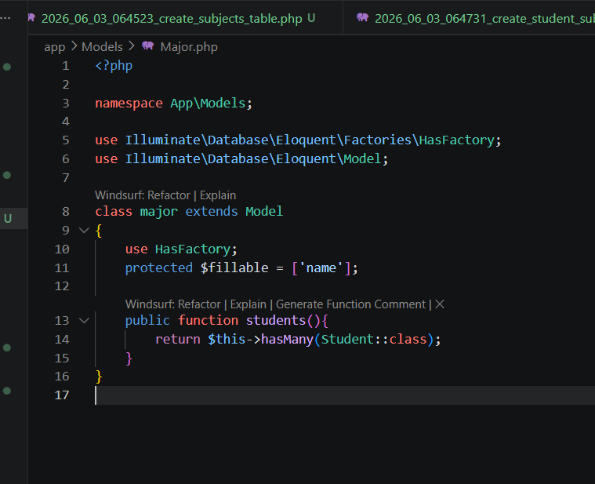
B. Model Student
Melalui eksekusi php artisan make:model Student, model bagi entitas mahasiswa didirikan. Berlawanan dengan Major, model Student mengimplementasikan kebergantungan (relasi ) kepada jurusan melalui metode pengembalian belongsTo(Major::class) yang ditempatkan pada fungsi major(). Untuk menghubungkan relasi silang Many-to-Many ke mata kuliah, dideklarasikan fungsi subjects() yang mengembalikan perintah belongsToMany(Subject::class).
protected $fillable = ['nim', 'name', 'address', 'major_id'];
public function major()
{
return $this->belongsTo(Major::class);
}
public function subjects()
{
return $this->belongsToMany(Subject::class);
}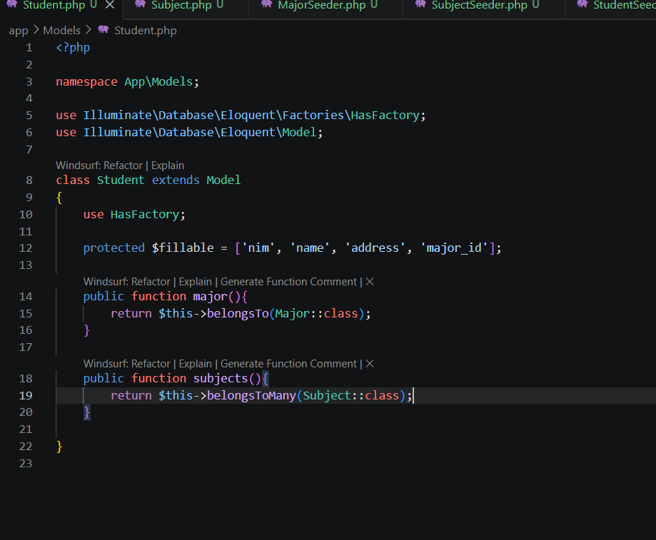
C. Model Subject
Sebagai penutup bagian permodelan relasional, dibentuklah kelas Subject lewat php artisan make:model Subject. Mirip dengan model mahasiswa, entitas ini bertindak sebagai persilangan data melalui fungsi students() dengan arahan relasi belongsToMany(Student::class). Pendekatan ini mendasari konsep di mana sebuah mata kuliah lazimnya diikuti oleh sejumlah mahasiswa yang berbeda.
protected $fillable = ['name', 'sks'];
public function students()
{
return $this->belongsToMany(Student::class);
}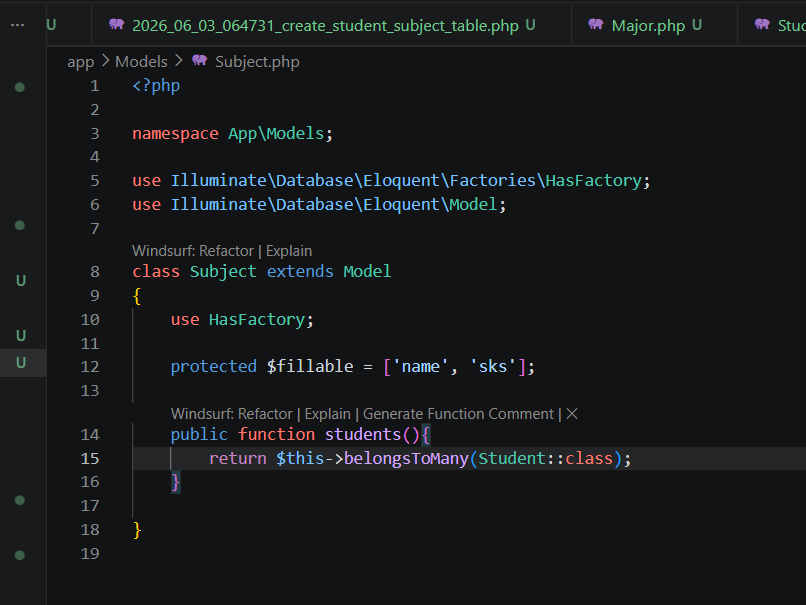
3. Penyiapan Data Awal (Seeding)
Guna memfasilitasi pengujian alur logika pada sistem, aplikasi membutuhkan sejumlah data bawaan (dummy data) yang dapat dimuat secara masif. Penyuplai data ini dibuat dengan metode Seeding.
File seeder bagi program studi dan mata kuliah masing-masing dilahirkan melalui instruksi php artisan make:seeder MajorSeeder dan php artisan make:seeder SubjectSeeder. Di dalam fungsi run() pada masing-masing file seeder tersebut, inisialisasi tatanan data diimplementasikan dengan memanfaatkan perulangan atas sekumpulan nilai parameter sederhana.
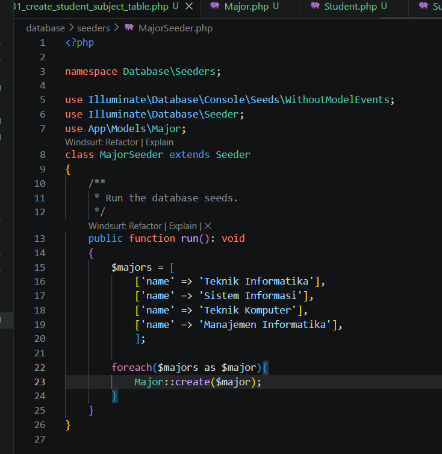
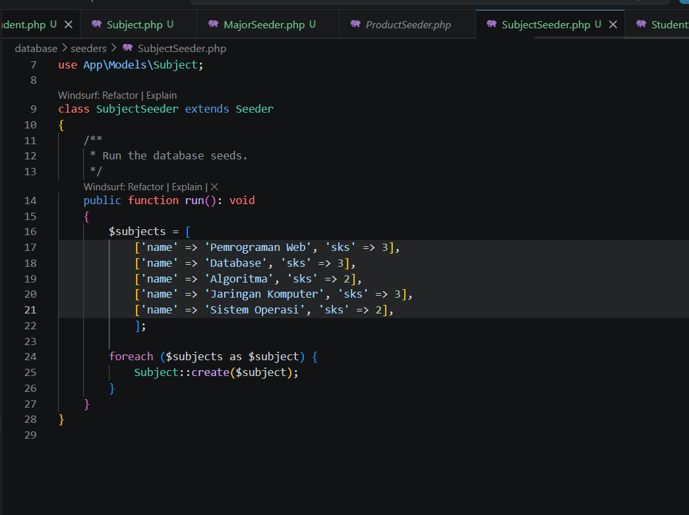
Konfigurasi seeder untuk entitas mahasiswa memiliki kompleksitas yang sedikit lebih tinggi. Pada fungsi run() di dalam file StudentSeeder, tidak hanya dilakukan penciptaan rekaman data profil, namun juga penyisipan ikatan dinamis. Untuk mempraktikkan keterhubungan Many-to-Many pada tabel , diaplikasikan perintah kueri Subject::inRandomOrder()->take(rand(2, 4))->pluck('id') yang menghasilkan kumpulan 2 hingga 4 identifikasi mata kuliah secara acak. Kumpulan ini seketika diikatkan pada rekaman mahasiswa melalui metode perantara attach().
foreach ($students as $studentData) {
$student = Student::create($studentData);
// Memberikan mata kuliah secara acak
$subjects = Subject::inRandomOrder()->take(rand(2, 4))->pluck('id');
$student->subjects()->attach($subjects);
}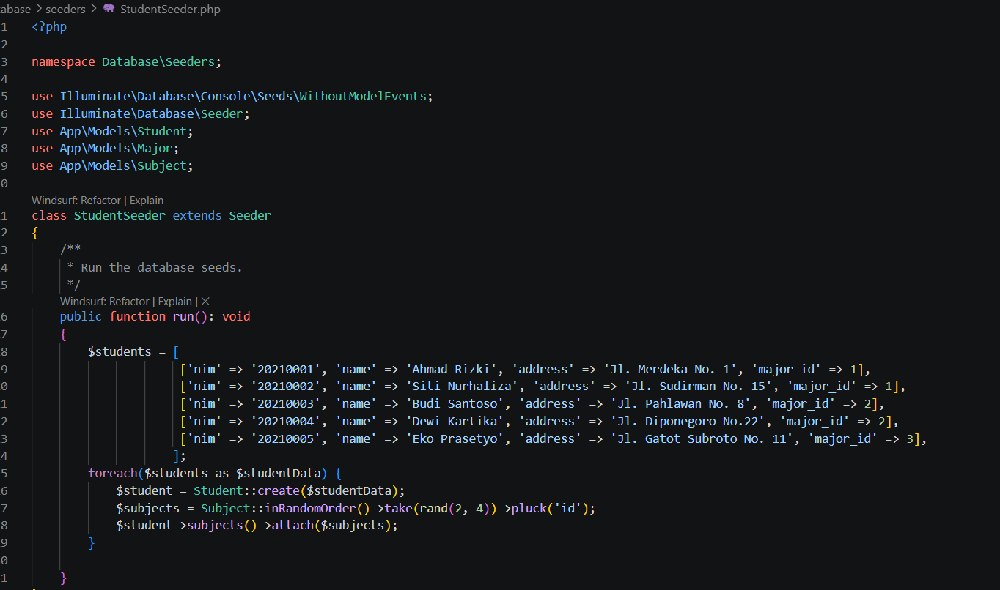
Pasca pembuatan tiga elemen seeder tersebut, tahapan aktivasi diurus di dalam file pusat DatabaseSeeder.php dengan mencantumkan nama-nama kelas tersebut ke dalam instrumen pengambil data $this->call(). Pelaksanaan final pada terminal diselesaikan menggunakan fungsi php artisan db:seed.
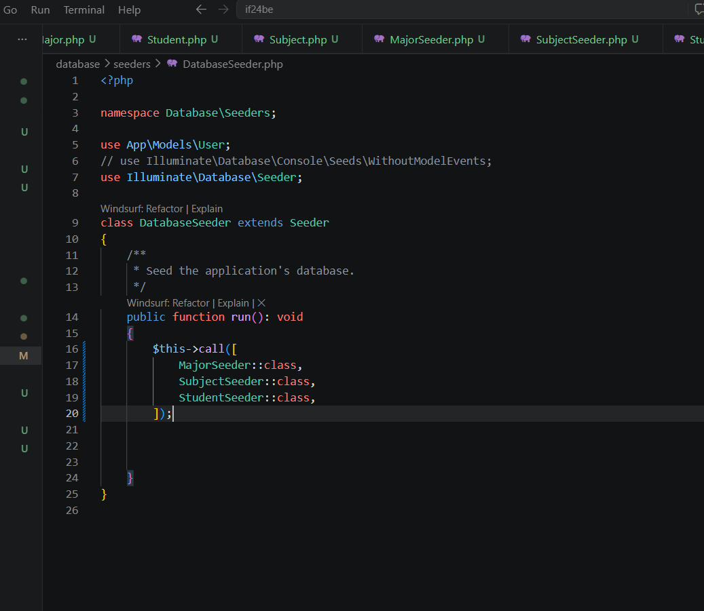
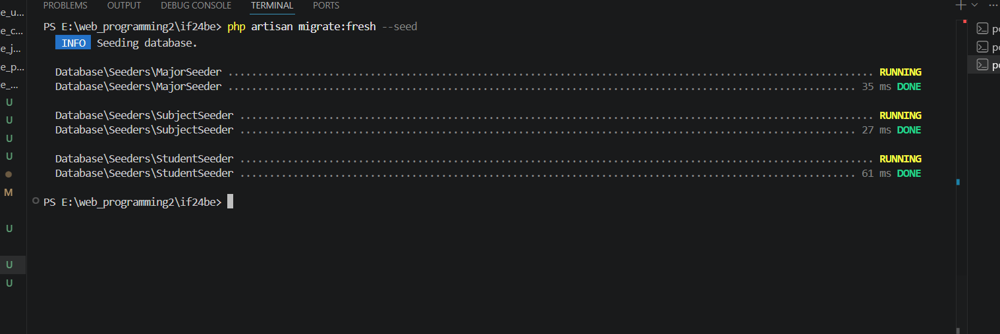
4. Konfigurasi Controller dan Evaluasi Query (Eager Loading)
Logika bisnis beserta orkestrasi pemrosesan diwadahi ke dalam entitas StudentController. Kelas ini di-generate lewat php artisan make:controller StudentController. Fokus khusus ditempatkan pada teknik pencarian data yang dilangsungkan di dalam fungsi index().
Secara fungsional, operasi ORM lazim akan menimbulkan gejala kinerja yang lamban ketika objek relasi dipanggil ulang di dalam perulangan HTML, sebuah permasalahan populer bernama . Guna menanggulangi isu tersebut, fungsi pemuatan lebih awal (Eager Loading) dirangkum bersamaan pada saat pengambilan kumpulan data mahasiswa melalui tambahan prosedur kueri with(['major', 'subjects']). Dengan konstruksi ini, beban jumlah perintah basis data dieksekusi secara drastis jauh lebih sedikit.
public function index()
{
// Mencegah N+1 problem dengan pemuatan awal (eager loading)
$students = Student::with(['major', 'subjects'])->get();
return view('students.index', compact('students'));
}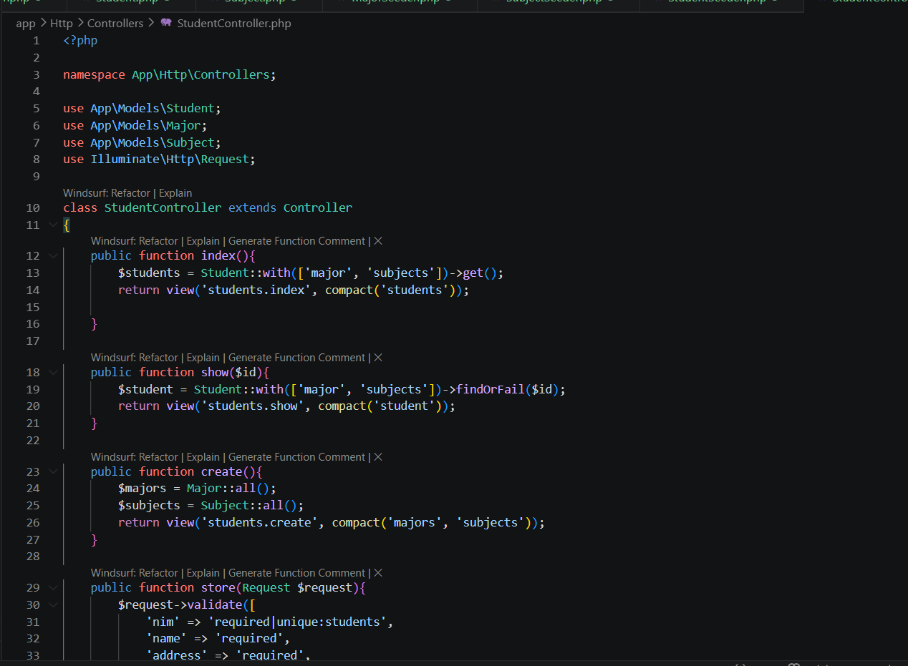
Di bagian fungsional penambahan (Store) dan pembaharuan (Update) catatan rekam data, sinkronisasi tautan relasi multi-arah (many-to-many) tidak boleh dilakukan dengan metode tradisional. Penyisipan kaitan baru diarahkan lewat perintah $student->subjects()->attach(), sedangkan pada saat pembaharuan dianjurkan memakai utilitas canggih bawaan Laravel yaitu $student->subjects()->sync() yang secara otonom membandingkan, membersihkan, hingga menyimpan pembaruan identifikasi tanpa harus melakukan penyisiran ulang manual.
public function store(Request $request)
{
// (Validasi input dihilangkan untuk abstraksi baca)
$student = Student::create($request->only(['nim', 'name', 'address', 'major_id']));
$student->subjects()->attach($request->subjects);
// ...
}
public function update(Request $request, $id)
{
$student = Student::findOrFail($id);
$student->update($request->only(['nim', 'name', 'address', 'major_id']));
$student->subjects()->sync($request->subjects);
// ...
}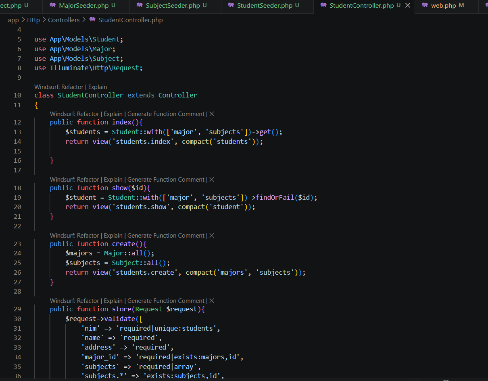
5. Pengaturan Rute dan Perancangan Antarmuka (Views)
Guna memudahkan alur lalu lintas pengaksesan perutean antar alamat, maka mekanisme delegasi alamat bagi StudentController dilakukan secara ringkas melalui penggunaan registrasi Route::resource(). Prosedur penulisan yang bersandar pada ini mengalokasikan ketujuh standar method aksi CRUD secara simultan ke dalam sistem aplikasi tanpa mengganggu kerumitan berkas utama web.php.
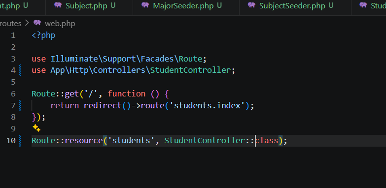
Untuk menyederhanakan arsitektur lapis penyajian HTML pada proyek berbasis Blade Templating Engine, dibentuk file penyusun dasar perwajah-an sistem, yaitu app.blade.php di subdirektori pandangan. Dokumen ini bertindak mengasimilasikan struktur navigasi baku serta memusatkan panggilan terhadap pustaka gaya (CSS) Bootstrap yang dimuat secara daring.
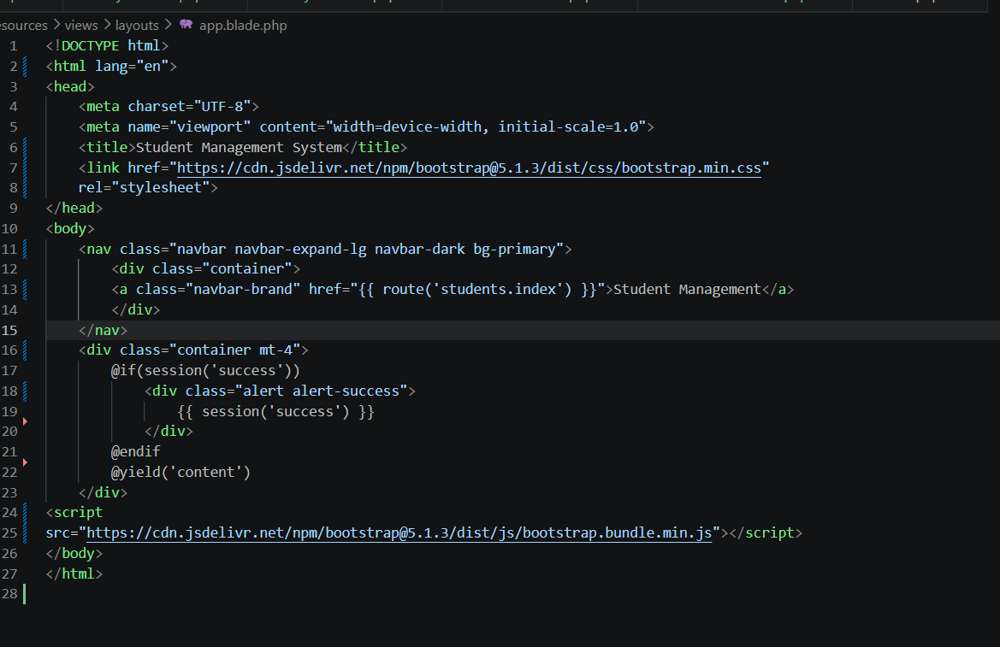
Dari tersebut, fungsi perluasan (inheritance) @extends('layouts.app') diturunkan kepada file penyusun tabel rincian daftar mahasiswa pada antarmuka index.blade.php. Tampilan daftar mata kuliah disemai dalam pengulangan @foreach. Untuk mengambil keluaran yang terikat melalui relasi, sekadar mencantumkan yang sangat mudah dipahami, semisal $student->major->name dan eksekusi instan $student->subjects->sum('sks') untuk menyimpulkan besaran beban akademis SKS.
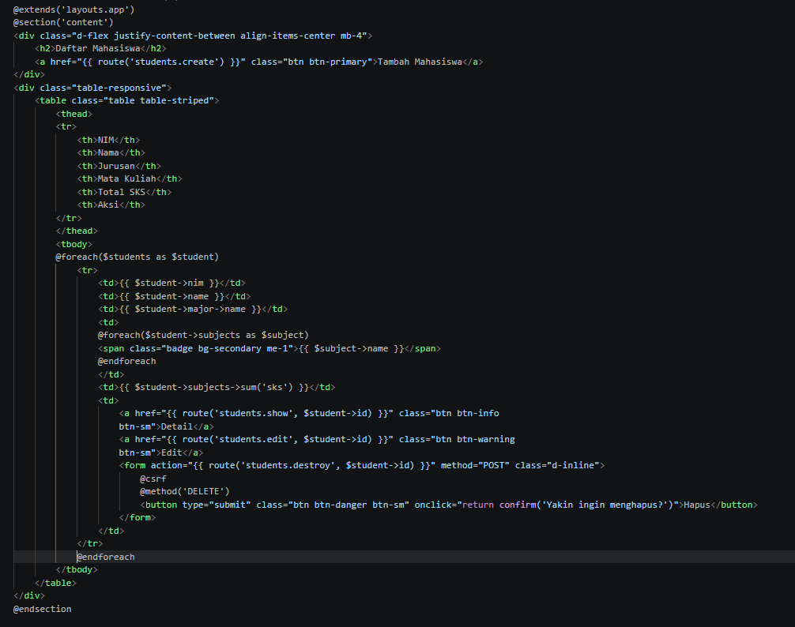
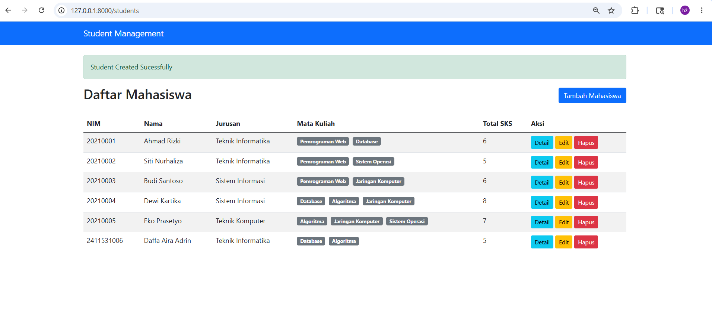
Selanjutnya, pendirian rancangan panel isian pengguna direntangkan dalam wujud halaman tambahan yaitu create.blade.php. Berkenaan relasi majemuk, pilihan jurusan yang bersifat singular dihadirkan pada konfigurasi tag seleksi tunggal (<select>). Di samping itu, agar pilihan mata kuliah Many-to-Many dapat terangkum secara struktur larik di balik layar form (HTML Payload), diadaptasikan format penamaan berkurung siku pada masukan kotak centang <input type="checkbox" name="subjects[]">.
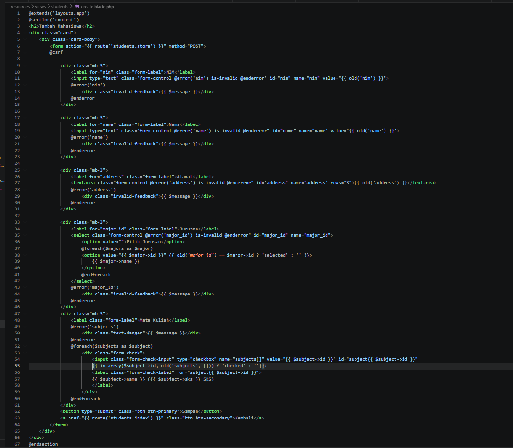
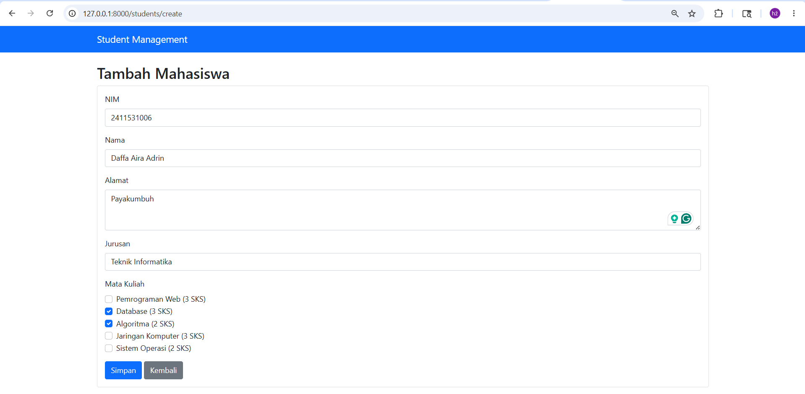
Latihan dan Tugas: Query dengan Relationship
Pada sub-bagian akhir pelaksanaan praktikum, diberikan penugasan guna menguji pemahaman terhadap fitur Query Builder serta pemanfaatan hubungan fungsional (relationship) yang disediakan oleh Eloquent. Dibuat sebuah kelas pengontrol tambahan dan sistem rute untuk menyajikan hasil analisis data secara terstruktur.
Penyusunan Logika Pengambilan Data (Query)
Setiap sub-pertanyaan diselesaikan dengan konstruksi pemanggilan spesifik yang dituliskan di dalam kelas pengontrol (Controller).
- Semua mahasiswa beserta jurusan dan mata kuliahnya: Diselesaikan menggunakan peritah eager loading
Student::with(['major', 'subjects'])->get(). Pemanggilan relasional di depan berguna untuk mempercepat eksekusi. - Jurusan dengan mahasiswa terbanyak: Diimplementasikan pemanfaatan agregat kueri
withCount('students')pada entitasMajor. Hasilnya kemudian diurutkan dari jumlah terbesar menggunakan pemanggilanorderByDesc('students_count')->first()guna memperoleh satu data tertinggi. - Mata kuliah yang diambil mahasiswa tertentu: Pendefinisian spesifik diterapkan dengan memanggil instansi tunggal mahasiswa menggunakan fungsi
find(), yang kemudian dirangkaikan dengan akses relasional$student->subjects. - Total SKS yang diambil mahasiswa: Penyelesaian dilakukan tanpa operasi kueri kompleks. Melalui agregasi Collection Laravel yang bekerja di tingkat memori, dilakukan pemanggilan fungsi perulangan
sum('sks')pada properti dinamis objeksubjectsmilik masing-masing mahasiswa.
class LatihanController extends Controller
{
public function index()
{
// 1. Semua mahasiswa beserta jurusan dan mata kuliahnya
$allStudents = Student::with(['major', 'subjects'])->get();
// 2. Jurusan yang memiliki mahasiswa terbanyak
$topMajor = Major::withCount('students')
->orderByDesc('students_count')
->first();
// 3. Mata kuliah yang diambil oleh mahasiswa tertentu (contoh ID: 1)
$specificStudent = Student::with('subjects')->find(1);
// 4. Total SKS dikelola langsung pada tampilan (View) menggunakan $student->subjects->sum('sks')
return view('latihan.index', compact('allStudents', 'topMajor', 'specificStudent'));
}
}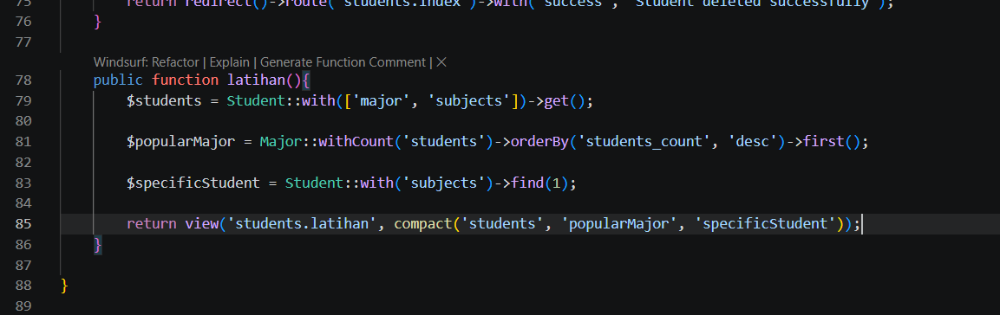
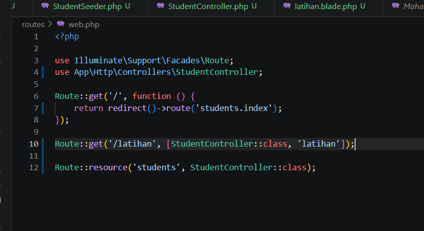
Penyusunan Antarmuka (View) Latihan
Setelah fungsi pengambilan data selesai dibuat, langkah selanjutnya adalah menampilkan kumpulan data tersebut ke layar pengguna (View). Halaman ini dibuat di dalam file latihan.blade.php dengan menggunakan elemen grid dan komponen card bawaan dari Bootstrap agar penyajian informasinya terstruktur dengan rapi.
Pada file tampilan ini, struktur dasar HTML diwariskan dari layout utama menggunakan arahan @extends('layouts.app'). Halaman kemudian dibagi menjadi dua sisi menggunakan elemen grid col-lg-4 dan col-lg-8. Di setiap blok card, dilakukan pengecekan data terlebih dahulu menggunakan arahan @if, contohnya @if($popularMajor) dan @if($specificStudent). Fungsi ini berguna untuk memastikan bahwa aplikasi tidak akan mengalami error apabila data di dalam database kosong.
Sementara itu, untuk menampilkan data yang berbentuk kumpulan larik (koleksi), seperti daftar seluruh mahasiswa maupun daftar mata kuliah pada mahasiswa tertentu, diterapkan perulangan @foreach($students as $student). Di dalam perulangan tersebut, akses pemanggilan relasi antar entitas, seperti pencetakan nama jurusan dari seorang mahasiswa, langsung dipanggil melalui objek properti yang saling terkait, yaitu {{ $student->major->name }}.
@extends ('layouts.app')
@section('content')
<div class="container py-2">
<div class="d-flex justify-content-between align-items-center mb-4 border-bottom pb-3">
<div>
<h1 class="h2 text-dark fw-bold">Penyelesaian Latihan Modul Relationship</h1>
<p class="text-muted mb-0">Kumpulan hasil eksekusi query Eloquent untuk Latihan 1 (Soal 1 - 4)</p>
</div>
</div>
<div class="row g-4">
<div class="col-lg-4">
<div class="card shadow-sm border-0 mb-4">
<div class="card-header bg-primary text-white fw-bold py-3">
Soal 2: Jurusan Terbanyak
</div>
<div class="card-body">
<p class="text-muted small mb-2">Jurusan dengan jumlah akumulasi mahasiswa paling banyak saat ini:</p>
@if($popularMajor)
<h5 class="card-title fw-bold text-primary mb-2">{{ $popularMajor->name }}</h5>
<p class="card-text mb-0">
<span class="badge bg-success px-3 py-2 fs-6">{{ $popularMajor->students_count }} Mahasiswa</span>
</p>
@else
<div class="alert alert-warning mb-0 py-2">Data jurusan tidak ditemukan.</div>
@endif
</div>
</div>
<div class="card shadow-sm border-0">
<div class="card-header bg-info text-white fw-bold py-3">
Soal 3: Mata Kuliah Mahasiswa Tertentu
</div>
<div class="card-body">
@if($specificStudent)
<div class="mb-3 border-bottom pb-2">
<span class="text-muted small d-block">Nama Mahasiswa:</span>
<strong class="text-dark fs-5">{{ $specificStudent->name }}</strong>
<span class="text-muted d-block small">NIM: {{ $specificStudent->nim }}</span>
</div>
<h6 class="fw-bold text-secondary mb-2">Daftar Mata Kuliah Diambil:</h6>
<ul class="list-group list-group-flush">
@foreach($specificStudent->subjects as $subject)
<li class="list-group-item d-flex justify-content-between align-items-center px-0 py-2">
<span>{{ $subject->name }}</span>
<span class="badge bg-secondary rounded-pill">{{ $subject->sks }} SKS</span>
</li>
@endforeach
</ul>
@else
<div class="alert alert-danger mb-0 py-2">Data mahasiswa tidak ditemukan.</div>
@endif
</div>
</div>
</div>
<div class="col-lg-8">
<div class="card shadow-sm border-0 mb-4">
<div class="card-header bg-dark text-white fw-bold py-3">
Soal 1: Semua Mahasiswa Beserta Jurusan & Mata Kuliah
</div>
<div class="card-body p-0">
<div class="table-responsive">
<table class="table table-hover align-middle mb-0">
<thead class="table-light">
<tr>
<th class="ps-3" style="width: 20%;">NIM</th>
<th style="width: 25%;">Nama</th>
<th style="width: 25%;">Jurusan</th>
<th class="pe-3" style="width: 30%;">Mata Kuliah</th>
</tr>
</thead>
<tbody>
@foreach($students as $student)
<tr>
<td class="ps-3 fw-bold text-secondary">{{ $student->nim }}</td>
<td class="fw-semibold text-dark">{{ $student->name }}</td>
<td>{{ $student->major->name }}</td>
<td class="pe-3">
@foreach($student->subjects as $subject)
<span class="badge bg-light text-dark border me-1 mb-1">{{ $subject->name }}</span>
@endforeach
</td>
</tr>
@endforeach
</tbody>
</table>
</div>
</div>
</div>
<div class="card shadow-sm border-0">
<div class="card-header bg-success text-white fw-bold py-3">
Soal 4: Total SKS yang Diambil Setiap Mahasiswa
</div>
<div class="card-body p-0">
<div class="table-responsive">
<table class="table table-striped table-hover align-middle mb-0">
<thead class="table-light">
<tr>
<th class="ps-3">NIM</th>
<th>Nama Mahasiswa</th>
<th class="pe-3 text-end">Total Beban SKS</th>
</tr>
</thead>
<tbody>
@foreach($students as $student)
<tr>
<td class="ps-3 text-secondary">{{ $student->nim }}</td>
<td class="fw-semibold text-dark">{{ $student->name }}</td>
<td class="pe-3 text-end fw-bold text-success">
{{ $student->subjects->sum('sks') }} SKS
</td>
</tr>
@endforeach
</tbody>
</table>
</div>
</div>
</div>
</div>
</div>
</div>
@endsectionHasil akhir dari penulisan kode di atas akan menampilkan halaman yang merangkum seluruh hasil kueri sesuai dengan tugas yang diberikan.
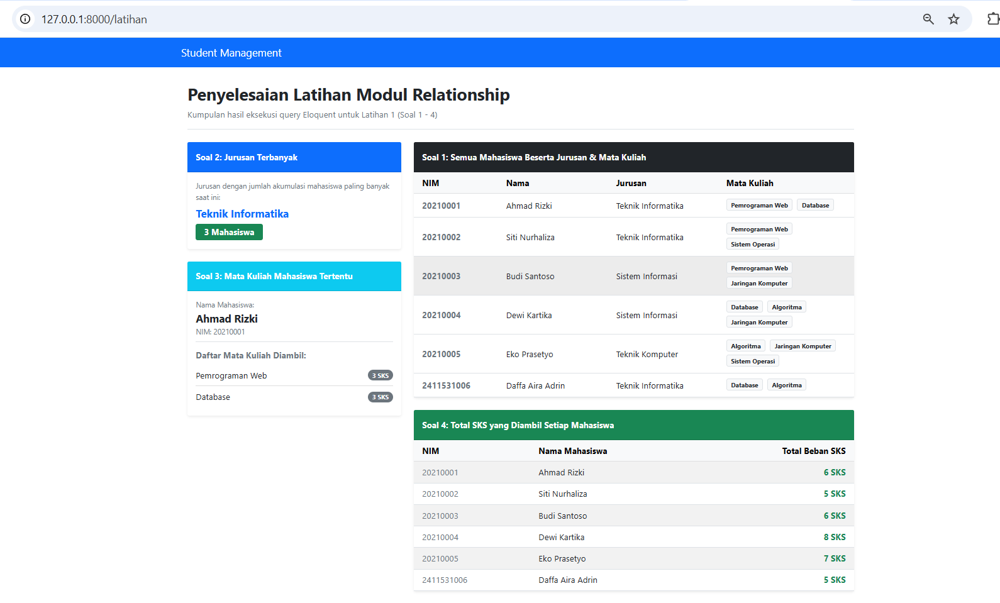
Kesimpulan
Berdasarkan prosedur yang telah dilalui pada modul Laravel Relationship, dapat ditarik kesimpulan bahwa kerangka kerja ini memberikan kapabilitas pengelolaan struktur tabel yang sangat mapan. Penggunaan Eloquent ORM telah secara nyata memudahkan implementasi pemetaan relasi data, mulai dari tipe One-to-Many hingga bentuk yang lebih kompleks seperti Many-to-Many yang memerlukan bantuan tabel perantara (pivot table).
Selain pemetaan relasi antar tabel, penerapan praktik terbaik (best practices) seperti Eager Loading terbukti mampu meningkatkan efisiensi dan mengurangi beban lalu lintas kueri ke basis data secara signifikan. Keseluruhan tahapan ini, dimulai dari pembuatan migrasi hingga pengaksesan properti relasional di dalam file tampilan (View), mengukuhkan bahwa relasi data adalah pondasi fundamental yang harus dikuasai guna membangun arsitektur perangkat lunak yang kohesif, terukur, serta terhindar dari inkonsistensi pertukaran data.
Repository Praktikum
Kode sumber dan file konfigurasi dari praktikum ini dapat diakses pada repositori GitHub berikut:
https://github.com/DaffaAiraAdrn/PemogramanWeb_2411531006/tree/main